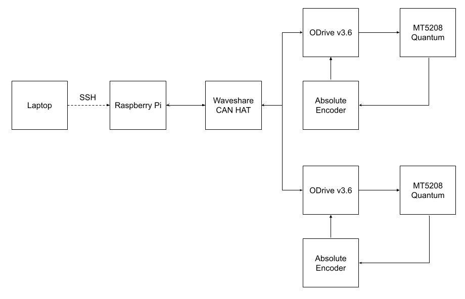

Motor Control Architecture
Embedded systems infrastructure for closed-loop locomotion research.
| Where | Gravish Bioinspired Robotics Lab, UC San Diego |
|---|---|
| When | 2026 |
| Hardware | Raspberry Pi on Ubuntu, ODrive v3.6 controllers, Quantum MT5208 motors, absolute encoders |
| Status | Network up and reachable over SSH; still need to do bandwidth validation |

My lab’s five-bar legged locomotion testbed was using direct USB to talk to its motor controllers, which introduced enough timing jitter to limit how tightly we could close a control loop. On advice from my friends on Yonder Dynamics’ software team, I proposed moving to a CAN bus network for more deterministic timing and cleaner scaling as more joints get added.
I built it on a Raspberry Pi running Ubuntu, and wired, soldered and configured these old ODrive v3.6 controllers driving Quantum MT5208 motors, with absolute encoders for feedback. Most of the time went into driver conflicts and dependency issues in the legacy testbed code — years-old browser Jupyter, among other things.
The network is up and reachable over SSH, but spring quarter ended before I could run full bandwidth validation. When I get back I plan to characterize the new system, along with moving over to ODrive S1 controllers and a Waveshare CAN HAT for better performance, and cleaner wiring.